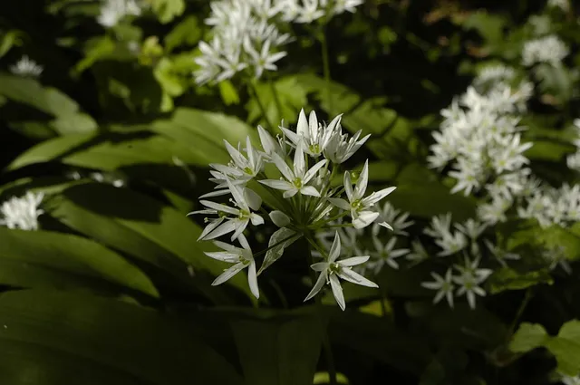

Sauces, preserves & sides · Popular in South
Wild garlic pesto (daslookpesto)
Wild garlic pesto (daslookpesto) is made with wild garlic, a favourite in South.

How do you make wild garlic pesto (daslookpesto)?
Wild garlic with cheese, nuts and oil.
Wild ingredients
- Wild garlic (Allium ursinum): in season March to May
Watch the recipe

Video: Zoo Wild on YouTube